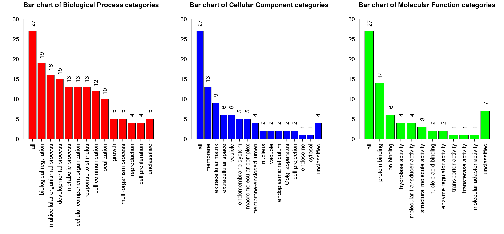

Summary (Result Download)
Enrich method: ORAOrganism:hsapiens
Enrichment Categories: geneontology_Biological_Process
Interesting gene list: mesenchymal_genes_sd_1532037730.txt. ID type: genesymbol
The interesting gene list contains 32 user IDs in which 27 user IDs are unambiguously mapped to the unique Entrez Gene IDs and 5 user IDs are mapped to multiple Entrez Gene IDs or could not be mapped to any Entrez Gene ID. The GO Slim summary are based upon the 27 unique Entrez Gene IDs.
Among the 27 unique Entrez Gene IDs, 23 IDs are annotated to the selected functional categories and also in the reference gene list, which are used for the enrichment analysis.
Reference gene list: uploads/background_genes_1532037730.txt ID type: genesymbol
The reference gene list contains 5000 IDs in which 4627 IDs are unambiguously mapped to the unique Entrez Gene IDs and 373 IDs are mapped to multiple Entrez Gene IDs or could not be mapped to any Entrez Gene ID.
Among the 4627 unique Entrez Gene IDs, 4020 IDs are annotated to the selected functional categories, which are used as the reference for the enrichment analysis.
Parameters for the enrichment analysis:
- Minimum number of Entrez Gene IDs in the category:5
- Maximum number of Entrez Gene IDs in the category:2000
- FDR Method:BH
- Significance Level: Top10
Mapped User IDs
| userid | Gene Symbol | Gene Name | Entrez Gene |
|---|---|---|---|
| CORIN | CORIN | corin, serine peptidase | 10699 |
| FAT3 | FAT3 | FAT atypical cadherin 3 | 120114 |
| NKAIN4 | NKAIN4 | Sodium/potassium transporting ATPase interacting 4 | 128414 |
| COL10A1 | COL10A1 | collagen type X alpha 1 chain | 1300 |
| COL11A1 | COL11A1 | collagen type XI alpha 1 chain | 1301 |
| COMP | COMP | cartilage oligomeric matrix protein | 1311 |
| LRRC15 | LRRC15 | leucine rich repeat containing 15 | 131578 |
| KANK4 | KANK4 | KN motif and ankyrin repeat domains 4 | 163782 |
| ADAMTS16 | ADAMTS16 | ADAM metallopeptidase with thrombospondin type 1 motif 16 | 170690 |
| EPYC | EPYC | epiphycan | 1833 |
| FAM189A1 | FAM189A1 | family with sequence similarity 189 member A1 | 23359 |
| NALCN | NALCN | sodium leak channel, non-selective | 259232 |
| GPR1 | GPR1 | G protein-coupled receptor 1 | 2825 |
| INHBA | INHBA | inhibin beta A subunit | 3624 |
| IGLON5 | IGLON5 | IgLON family member 5 | 402665 |
| OMD | OMD | osteomodulin | 4958 |
| OGN | OGN | osteoglycin | 4969 |
| SHANK1 | SHANK1 | SH3 and multiple ankyrin repeat domains 1 | 50944 |
| MAGEL2 | MAGEL2 | MAGE family member L2 | 54551 |
| SORCS2 | SORCS2 | sortilin related VPS10 domain containing receptor 2 | 57537 |
| PTPRD | PTPRD | protein tyrosine phosphatase, receptor type D | 5789 |
| SFRP2 | SFRP2 | secreted frizzled related protein 2 | 6423 |
| SOX11 | SOX11 | SRY-box 11 | 6664 |
| BICC1 | BICC1 | BicC family RNA binding protein 1 | 80114 |
| ADAMTS12 | ADAMTS12 | ADAM metallopeptidase with thrombospondin type 1 motif 12 | 81792 |
| KIAA1644 | KIAA1644 | KIAA1644 | 85352 |
| ITGBL1 | ITGBL1 | integrin subunit beta like 1 | 9358 |
User IDs mapped to multiple Entrtez IDs or not mapped
| userid |
|---|
| ASAM |
| PPAPDC1A |
| ODZ3 |
| MGC45800 |
| IGF2AS |
GOSlim summary for the user list genes
Each Biological Process, Cellular Component and Molecular Function category is represented by a red, blue and green bar, repectively.The height of the bar represents the number of user list genes observed in the category. 
Detailed information of the enriched categories
The statistics

- C: the number of reference genes in the category
- O: the number of genes in the user gene list and also in the category
- E: The expected number in the category
- R: ratio of enrichment
- PValue: p value from hyergeometric test
- FDR: FDR from BH
- GO:0051216 cartilage development
- GO:0048705 skeletal system morphogenesis
- GO:0009653 anatomical structure morphogenesis
- GO:0042340 keratan sulfate catabolic process
- GO:0061448 connective tissue development
- GO:0035385 Roundabout signaling pathway
- GO:0031344 regulation of cell projection organization
- GO:0061029 eyelid development in camera-type eye
- GO:0060349 bone morphogenesis
- GO:0003208 cardiac ventricle morphogenesis
| ID:GO:0051216 Name:cartilage development | |||
|---|---|---|---|
| C=92; O=5; E=0.53; R=9.5; PValue=1.37e-04; FDR=3.34e-01 | |||
| userid | Gene Symbol | Gene Name | Entrez Gene |
| COL10A1 | COL10A1 | collagen type X alpha 1 chain | 1300 |
| COL11A1 | COL11A1 | collagen type XI alpha 1 chain | 1301 |
| COMP | COMP | cartilage oligomeric matrix protein | 1311 |
| SFRP2 | SFRP2 | secreted frizzled related protein 2 | 6423 |
| ADAMTS12 | ADAMTS12 | ADAM metallopeptidase with thrombospondin type 1 motif 12 | 81792 |
| ID:GO:0048705 Name:skeletal system morphogenesis | |||
|---|---|---|---|
| C=99; O=5; E=0.57; R=8.83; PValue=1.94e-04; FDR=3.34e-01 | |||
| userid | Gene Symbol | Gene Name | Entrez Gene |
| COL10A1 | COL10A1 | collagen type X alpha 1 chain | 1300 |
| COL11A1 | COL11A1 | collagen type XI alpha 1 chain | 1301 |
| COMP | COMP | cartilage oligomeric matrix protein | 1311 |
| SFRP2 | SFRP2 | secreted frizzled related protein 2 | 6423 |
| SOX11 | SOX11 | SRY-box 11 | 6664 |
| ID:GO:0009653 Name:anatomical structure morphogenesis | |||
|---|---|---|---|
| C=868; O=13; E=4.97; R=2.62; PValue=2.63e-04; FDR=3.34e-01 | |||
| userid | Gene Symbol | Gene Name | Entrez Gene |
| COL10A1 | COL10A1 | collagen type X alpha 1 chain | 1300 |
| COL11A1 | COL11A1 | collagen type XI alpha 1 chain | 1301 |
| COMP | COMP | cartilage oligomeric matrix protein | 1311 |
| ADAMTS16 | ADAMTS16 | ADAM metallopeptidase with thrombospondin type 1 motif 16 | 170690 |
| EPYC | EPYC | epiphycan | 1833 |
| INHBA | INHBA | inhibin beta A subunit | 3624 |
| OMD | OMD | osteomodulin | 4958 |
| OGN | OGN | osteoglycin | 4969 |
| SHANK1 | SHANK1 | SH3 and multiple ankyrin repeat domains 1 | 50944 |
| PTPRD | PTPRD | protein tyrosine phosphatase, receptor type D | 5789 |
| SFRP2 | SFRP2 | secreted frizzled related protein 2 | 6423 |
| SOX11 | SOX11 | SRY-box 11 | 6664 |
| ADAMTS12 | ADAMTS12 | ADAM metallopeptidase with thrombospondin type 1 motif 12 | 81792 |
| ID:GO:0042340 Name:keratan sulfate catabolic process | |||
|---|---|---|---|
| C=5; O=2; E=0.03; R=69.91; PValue=3.1e-04; FDR=3.34e-01 | |||
| userid | Gene Symbol | Gene Name | Entrez Gene |
| OMD | OMD | osteomodulin | 4958 |
| OGN | OGN | osteoglycin | 4969 |
| ID:GO:0061448 Name:connective tissue development | |||
|---|---|---|---|
| C=110; O=5; E=0.63; R=7.94; PValue=3.18e-04; FDR=3.34e-01 | |||
| userid | Gene Symbol | Gene Name | Entrez Gene |
| COL10A1 | COL10A1 | collagen type X alpha 1 chain | 1300 |
| COL11A1 | COL11A1 | collagen type XI alpha 1 chain | 1301 |
| COMP | COMP | cartilage oligomeric matrix protein | 1311 |
| SFRP2 | SFRP2 | secreted frizzled related protein 2 | 6423 |
| ADAMTS12 | ADAMTS12 | ADAM metallopeptidase with thrombospondin type 1 motif 12 | 81792 |
| ID:GO:0035385 Name:Roundabout signaling pathway | |||
|---|---|---|---|
| C=7; O=2; E=0.04; R=49.94; PValue=6.46e-04; FDR=4.81e-01 | |||
| userid | Gene Symbol | Gene Name | Entrez Gene |
| EPYC | EPYC | epiphycan | 1833 |
| OGN | OGN | osteoglycin | 4969 |
| ID:GO:0031344 Name:regulation of cell projection organization | |||
|---|---|---|---|
| C=200; O=6; E=1.14; R=5.24; PValue=6.97e-04; FDR=4.81e-01 | |||
| userid | Gene Symbol | Gene Name | Entrez Gene |
| ADAMTS16 | ADAMTS16 | ADAM metallopeptidase with thrombospondin type 1 motif 16 | 170690 |
| EPYC | EPYC | epiphycan | 1833 |
| OGN | OGN | osteoglycin | 4969 |
| SHANK1 | SHANK1 | SH3 and multiple ankyrin repeat domains 1 | 50944 |
| PTPRD | PTPRD | protein tyrosine phosphatase, receptor type D | 5789 |
| SFRP2 | SFRP2 | secreted frizzled related protein 2 | 6423 |
| ID:GO:0061029 Name:eyelid development in camera-type eye | |||
|---|---|---|---|
| C=8; O=2; E=0.05; R=43.7; PValue=8.59e-04; FDR=4.81e-01 | |||
| userid | Gene Symbol | Gene Name | Entrez Gene |
| INHBA | INHBA | inhibin beta A subunit | 3624 |
| SOX11 | SOX11 | SRY-box 11 | 6664 |
| ID:GO:0060349 Name:bone morphogenesis | |||
|---|---|---|---|
| C=35; O=3; E=0.2; R=14.98; PValue=9.51e-04; FDR=4.81e-01 | |||
| userid | Gene Symbol | Gene Name | Entrez Gene |
| COL10A1 | COL10A1 | collagen type X alpha 1 chain | 1300 |
| COMP | COMP | cartilage oligomeric matrix protein | 1311 |
| SFRP2 | SFRP2 | secreted frizzled related protein 2 | 6423 |
| ID:GO:0003208 Name:cardiac ventricle morphogenesis | |||
|---|---|---|---|
| C=36; O=3; E=0.21; R=14.57; PValue=1.03e-03; FDR=4.81e-01 | |||
| userid | Gene Symbol | Gene Name | Entrez Gene |
| COL11A1 | COL11A1 | collagen type XI alpha 1 chain | 1301 |
| SFRP2 | SFRP2 | secreted frizzled related protein 2 | 6423 |
| SOX11 | SOX11 | SRY-box 11 | 6664 |